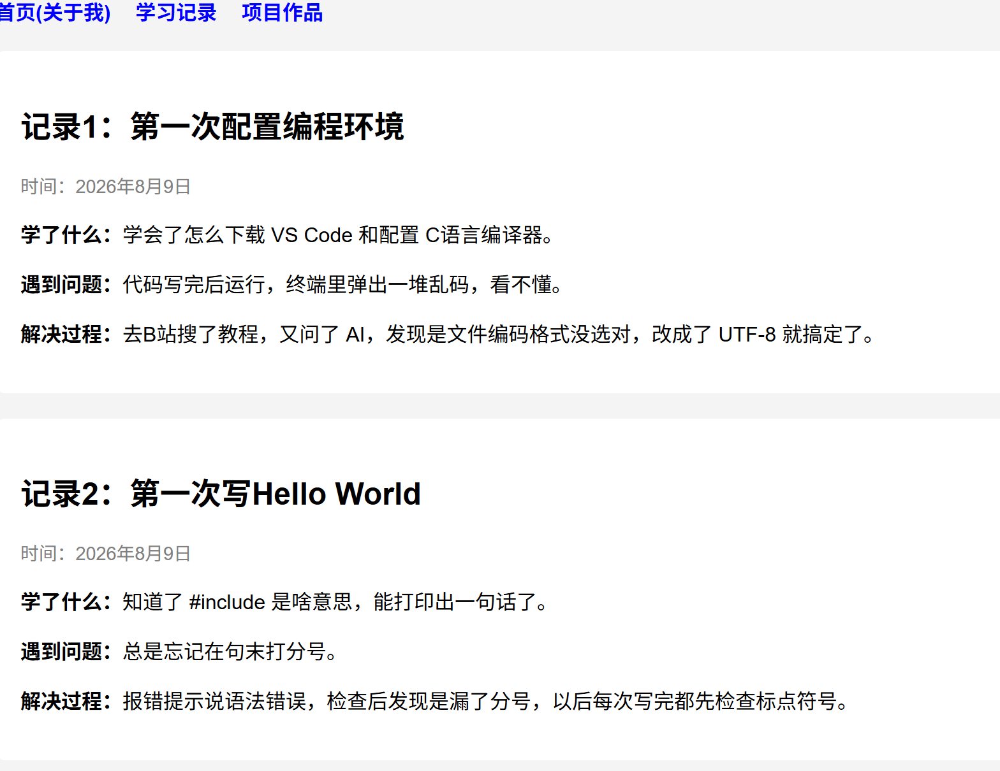
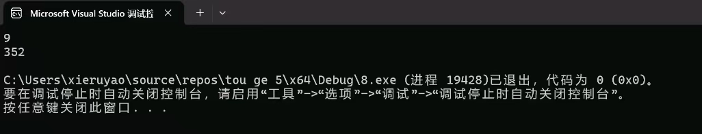

技能展示：HTML基础排版、CSS简单美化、GitHub基本操作。
解决了什么问题：以前完全不会做网页，现在成功用代码建起了自己的第一个个人空间，并且实现了多个页面之间的互相跳转。
初次作品截图：

技能展示：C语言基础语法、回溯算法
解决了什么问题：通过回溯法解决了经典的N皇后问题，保证了任意两个皇后不在同一行，同一列或同一对角线上，虽然代码不算最优化，但是我自己一行一行敲出来的。
作品截图：
